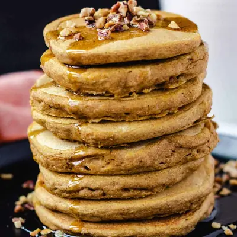

Vegan Pumpkin Pancakes

Ingredients
- 1 cup whole wheat flour
- 1 tbsp baking powder
- 1/2 tsp pumpkin pie spice
- 1/4 tsp salt
- 4 tbsp pumpkin puree
- 1 cup unsweetened almond milk (or other dairy free milk)
- 1/2 tsp vanilla extract
- chopped nuts (optional)
Steps
- Whisk together whole wheat flour, baking powder, pumpkin pie spice, and salt. Set aside.
- In a separate bowl, whisk together almond milk, pumpkin puree, and vanilla extract. Add to the dry ingredients. Fold together until combined. Don't over mix. Allow the batter to rest for 15 minutes.
- While batter is resting, preheat your skillet to medium heat. Use a non-stick skillet to avoid the need to add oil or vegan butter to the pan. If you use a non-stick skillet you will have no problem flipping the pancakes without oil. However, if you prefer to use something, I recommend using a coconut oil cooking spray. When skillet is hot, add batter, about 1/4 cup.
- Wait for batter to bubble about 3-4 minutes, then flip, and cook the other side an additional 2-3 minutes. Serve with maple syrup! Enjoy!
Recipe by Anjali Shah, from The Picky Eater. Saved here for personal use; the original has the full notes, tips and photos. Open original